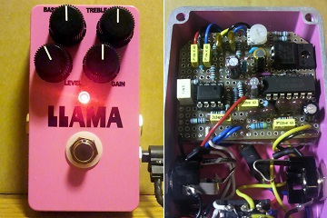
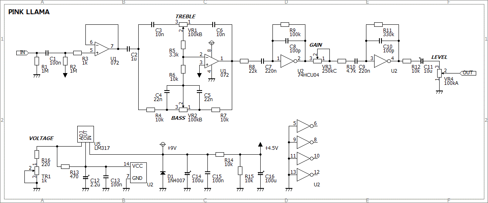
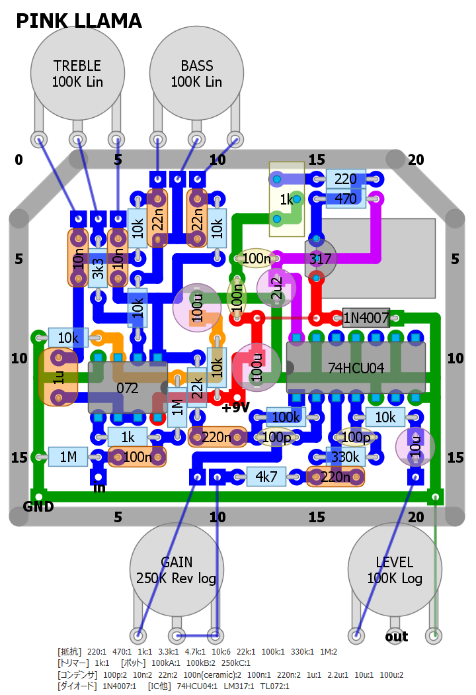
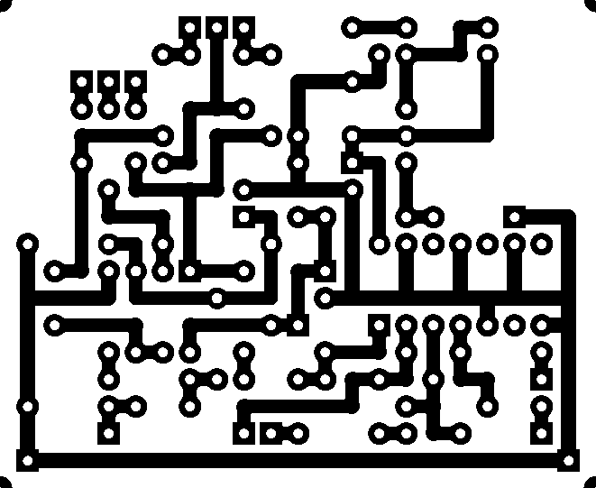

PINK LLAMA
2014年07月01日 カテゴリー：自作エフェクター（アナログ）

Red LlamaというエフェクターはCD4049というデジタル回路用のロジックICを使われています。この種類のICの歪みがどういうものか気になり製作してみることにしました。（名前はLlamaですが、ひよこのページのクランチドライブを元にしています。）
▽回路図

バッファー→トーン回路→増幅（歪み）という構成になっています。74HCU04もCD4049と似たようなICです。MOS-FETが入っていて、真空管に比較的近い特性を持っているらしいです。
トーン回路は通常歪ませた後に入っていることが多いですが、今回は歪ませる前に持ってくるようにしました。ギターアンプのパワーアンプ部で歪ませるイメージです。またもSansampのトーン回路を流用しました。操作した感じでは特に低音の調整がしやすくなった気がします。
74HCU04は動作電圧が2～6Vなので電圧を9Vから下げなければいけません。単に下げるだけでは面白くないので、LM317を使って電圧を可変にしました。当初は外部ポットで電圧を変更して歪み調整しようとしましたが、操作性がイマイチだったので結局トリマーにしました。とりあえず私は3.5Vに調整しましたが、もっと低くすれば深く歪みます。
▽レイアウト

▽PCB（横55.9mm縦45.7mm）

LM317が大きいですが意外と余裕があるレイアウトになりました。最近は無理せずジャンパーを使うようにしています。シルバーマイカコンデンサが余っていたので使いましたが、やっぱりデカ過ぎです…
電源電圧の調節は思ったより応用が利きそうです。使用するギターの出力に合わせて変更したり、歪みの可変幅を変更したりできます。ただ肝心の歪みの違いは私の耳ではあまりわかりませんでした。
（2016年11月9日部品リスト・PCB追加）